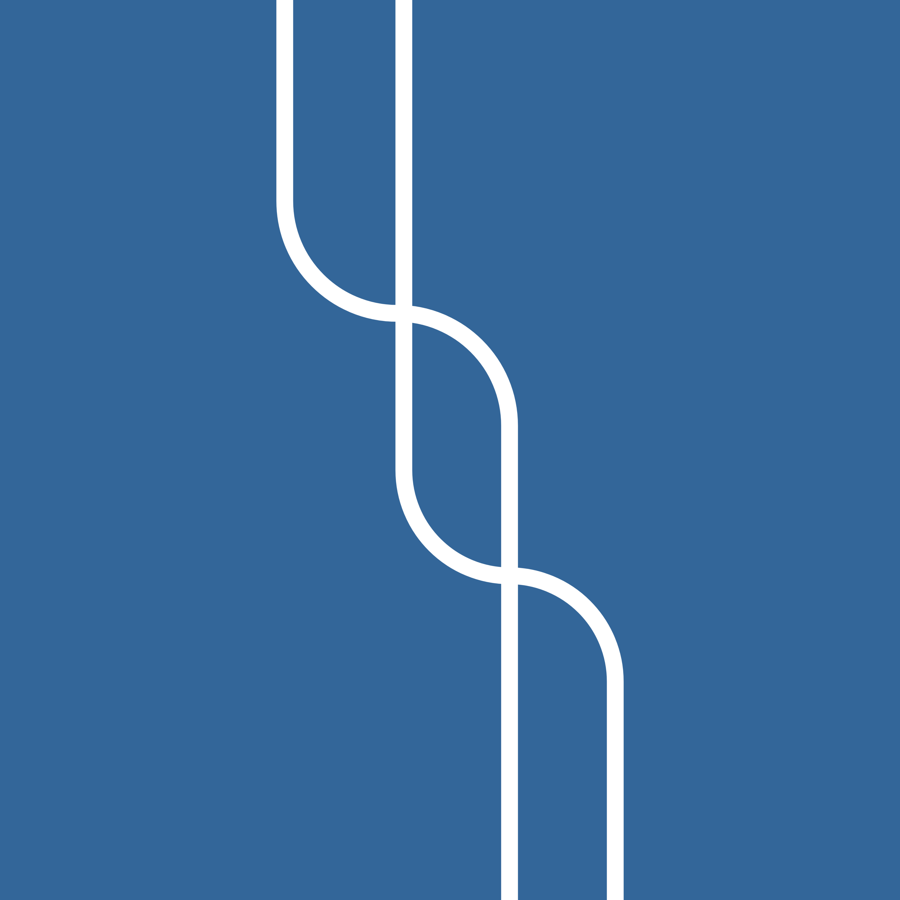
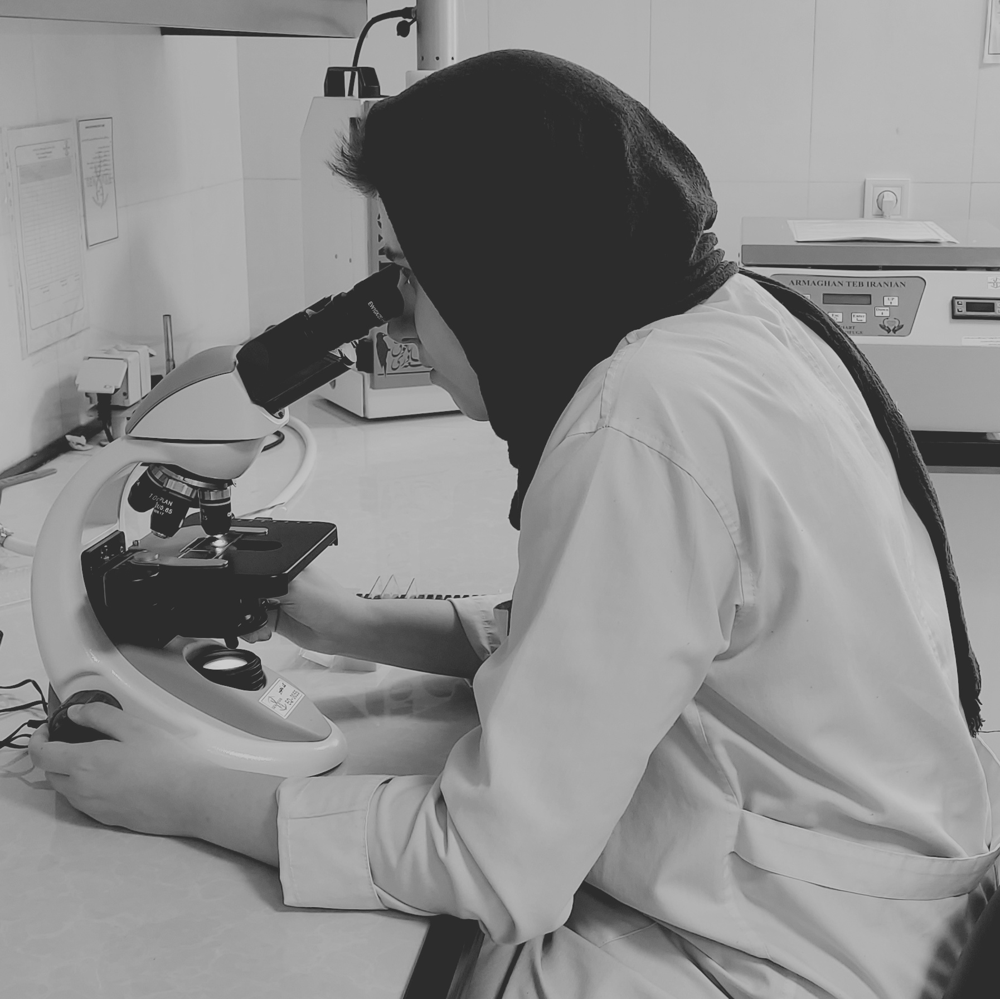

Hey there! Welcome to my page!
I'm Saameh, a recent Cell and Molecular Biology graduate. Interested in Working Memory, I'm trying to use tools from diverse fields like computational neuroscience or molecular biology to study how it functions. Having training in both wet and dry lab techniques made me curious to see how the variety of these interdisciplinary lenses match together to give us a holistic image of the functions of our working memory, particularly when it comes to learning and decision making. I'm also eager to study how this function changes in different timescales, not only over our lifespan with changes in overall cognitive function, but when we look at it in smaller timescales and examine how our environment or emotion affect it "on the spot."
